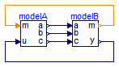

Nonlinear system of equation with discrete part that requires to lock relations at events in order that in the inner loop the real nonlinear algebraic equation system can be solved.
The solution computed in SimulationX:
Extends from Modelica.Icons.ExamplesPackage (Icon for packages containing runnable examples).
| Name | Description |
|---|---|
| Reference solution in pure Modelica using exactly the same structuring as in Model WithFMUs | |
| Solution with FMUs | |
| For all models in this package an FMU must be generated |
 FMITest.MixedSystems.DiscreteContinuousNonLinear.WithFMUsReference
FMITest.MixedSystems.DiscreteContinuousNonLinear.WithFMUsReference
Reference solution in pure Modelica using exactly the same structuring as in Model WithFMUs

Extends from Modelica.Icons.Example (Icon for runnable examples).
FMITest.MixedSystems.DiscreteContinuousNonLinear.WithFMUsSolution with FMUs
Extends from Modelica.Icons.Example (Icon for runnable examples).